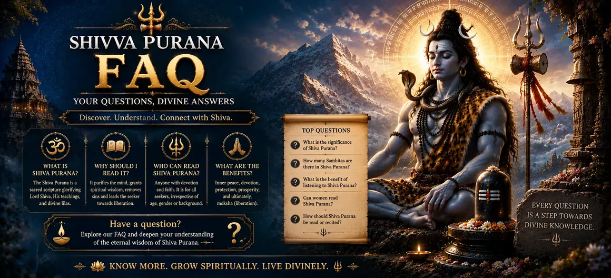

Welcome to the Shiva Purana FAQ section. Here you will find answers to important questions about the sacred Shiva Purana, its Samhitas, Khandas, teachings, spiritual significance, and the wisdom revealed by Lord Shiva.
The Shiva Purana is one of the most revered Mahāpurāṇas dedicated to Lord Shiva. It contains divine stories, philosophical teachings, spiritual practices, and guidance for devotees seeking knowledge, devotion, and liberation.
This FAQ page brings together common questions about Shiva Purana to help readers understand its structure, importance, and eternal teachings in a simple and accessible way.
Shiva Purana is one of the eighteen Mahāpurāṇas of Hindu tradition. It describes the glory of Lord Shiva, divine stories, spiritual teachings, devotion, creation, and the path to liberation.
The Shiva Purana is traditionally attributed to Sage Vyāsa, who compiled the ancient sacred scriptures for the benefit of humanity.
Shiva Purana contains multiple sacred Samhitas that reveal different aspects of Lord Shiva's glory, philosophy, devotion, rituals, and spiritual wisdom.
The Shiva Purana is divided into important Khandas that describe divine events, incarnations, teachings, battles, and the eternal relationship between Shiva and His devotees.
The Samhitas are sacred divisions of Shiva Purana that contain teachings about Lord Shiva, creation, devotion, spiritual practices, and divine knowledge.
Uma Samhita contains the sacred teachings of Lord Shiva and Goddess Uma regarding devotion, spiritual knowledge, yoga, meditation, dharma, and liberation.
Vāyavīya Samhita explains the supreme nature of Lord Shiva, creation, cosmic principles, devotion, knowledge, and the path toward liberation.
Reading Shiva Purana helps devotees understand the glory of Lord Shiva, the importance of devotion, righteous living, spiritual wisdom, and the path toward liberation.
Yes. Devotees can read Shiva Purana daily with faith and devotion. Even listening to sacred stories of Lord Shiva is considered spiritually beneficial.
According to the teachings of the Purana, listening to Shiva Purana with devotion destroys negativity, increases spiritual awareness, and brings the blessings of Lord Shiva.
Yes. Shiva Purana is a source of spiritual knowledge for all sincere seekers who wish to understand devotion, wisdom, and the teachings of Lord Shiva.
Shiva Purana is not only a collection of divine stories but also a complete spiritual guide that teaches devotion, righteousness, self-discipline, meditation, and the eternal wisdom of Lord Shiva. Through its sacred teachings, devotees can understand the nature of creation, the power of devotion, and the path that leads the soul toward divine realization.
Reading, hearing, and reflecting upon the teachings of Shiva Purana with faith is considered a sacred practice that brings peace, wisdom, devotion, and the blessings of Lord Mahadeva.
The teachings of Shiva Purana reveal that Lord Shiva is the eternal source of creation, preservation, and dissolution. He is the compassionate Lord who accepts every sincere devotee and guides souls toward liberation through knowledge and devotion.
Explore the sacred Samhitas and Khandas of Shiva Purana chapter by chapter. Discover the divine teachings of Lord Shiva and immerse yourself in the eternal wisdom of Sanātana Dharma.